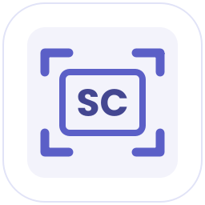
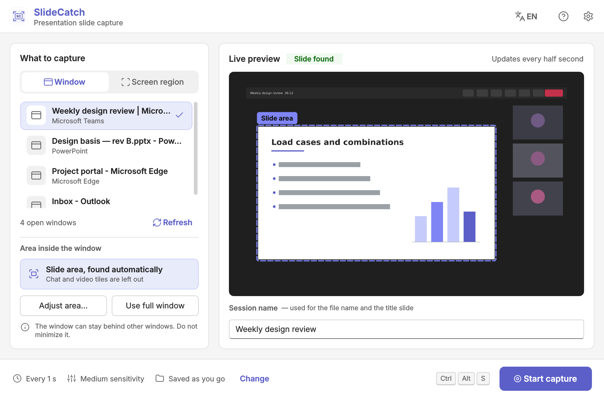
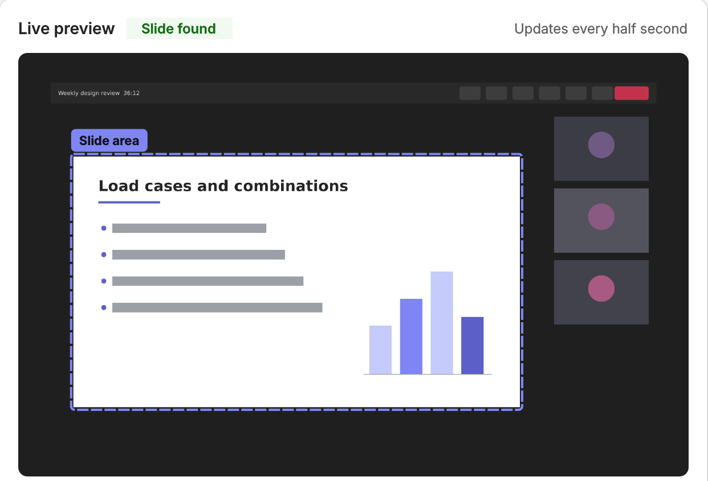
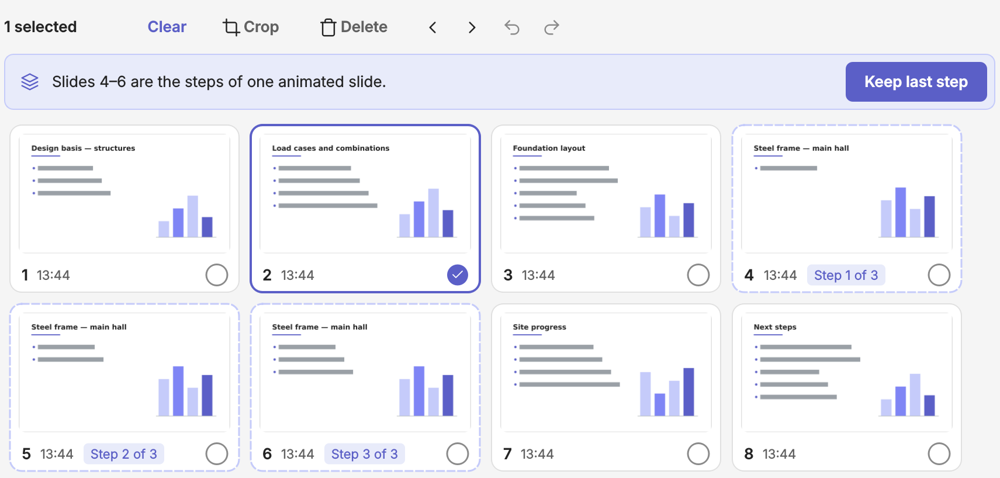
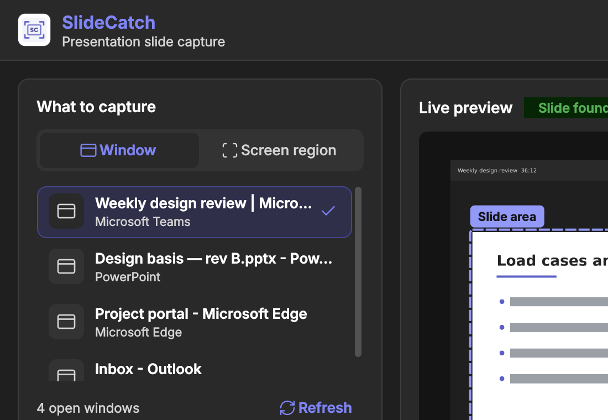

Only real slides are kept
SlideCatch finds the slide inside the meeting window and leaves out the chat and video tiles. Webcams, the mouse pointer and half-finished transitions never count as a new slide.

SlideCatchSlideCatch watches a presentation in Microsoft Teams and keeps a picture of each slide. When it ends, you get a PowerPoint, a PDF or pictures.
Open your meeting as usual. SlideCatch does the rest.
SlideCatch finds the shared slide inside it and leaves out the chat and the video tiles.
A small bar saves each new slide the moment it appears. The meeting window can stay behind other windows.
Reorder, crop or delete slides, then save a PowerPoint, a PDF or pictures.

Small, quick and quiet while the presentation runs.
SlideCatch finds the slide inside the meeting window and leaves out the chat and video tiles. Webcams, the mouse pointer and half-finished transitions never count as a new slide.

Each slide is written to disk the moment it is caught. If the computer stops, SlideCatch offers to restore the session at the next start.
Reorder by dragging, crop, delete, undo. Slides built line by line are grouped, and one click keeps only the final step.

English, French, Spanish, German and Arabic, in the Microsoft Teams colours.

Free, for Windows 10 and 11. Both versions are the same app and update themselves.
Windows protected your PC? The installer is not yet signed with a paid certificate, so SmartScreen may show this warning the first time. Click More info, then Run anyway. The portable version usually avoids the warning.
SlideCatch is free and provided as is. You use it at your own responsibility: ask the presenter's permission before you capture, and respect your organisation's rules and the law on personal data and copyright.